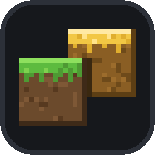
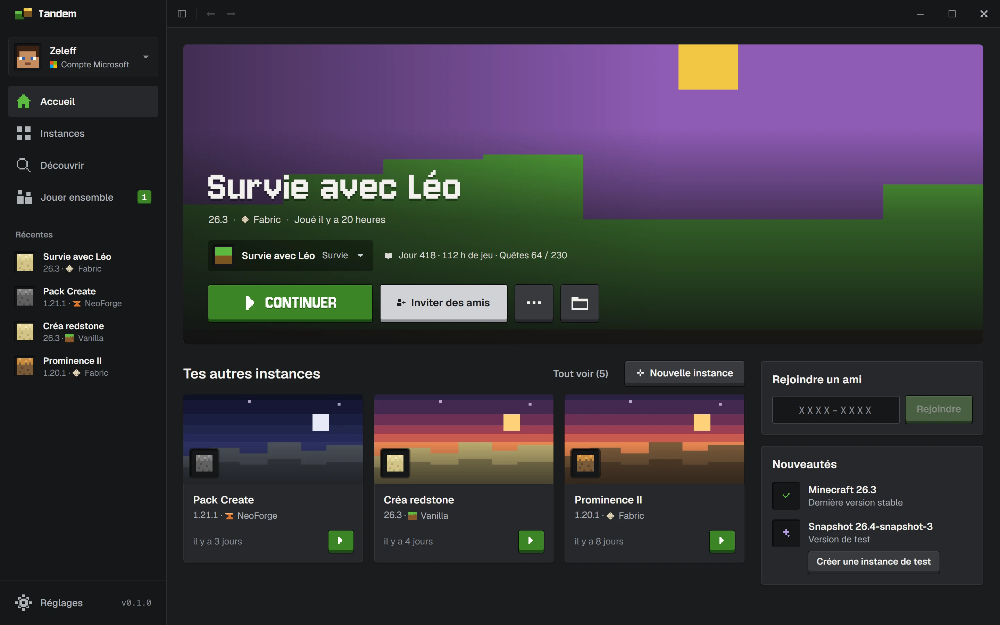
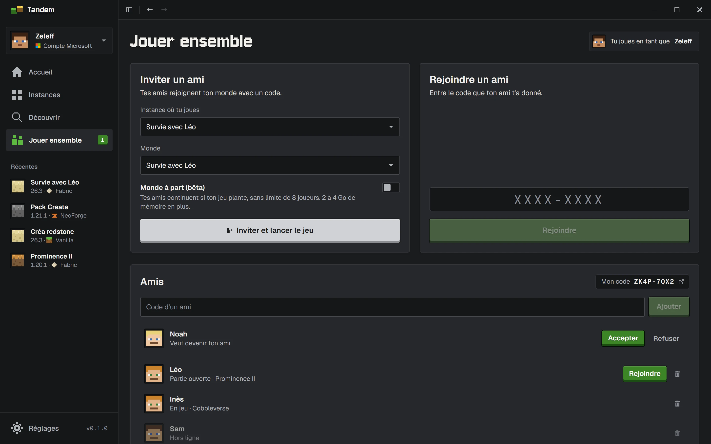
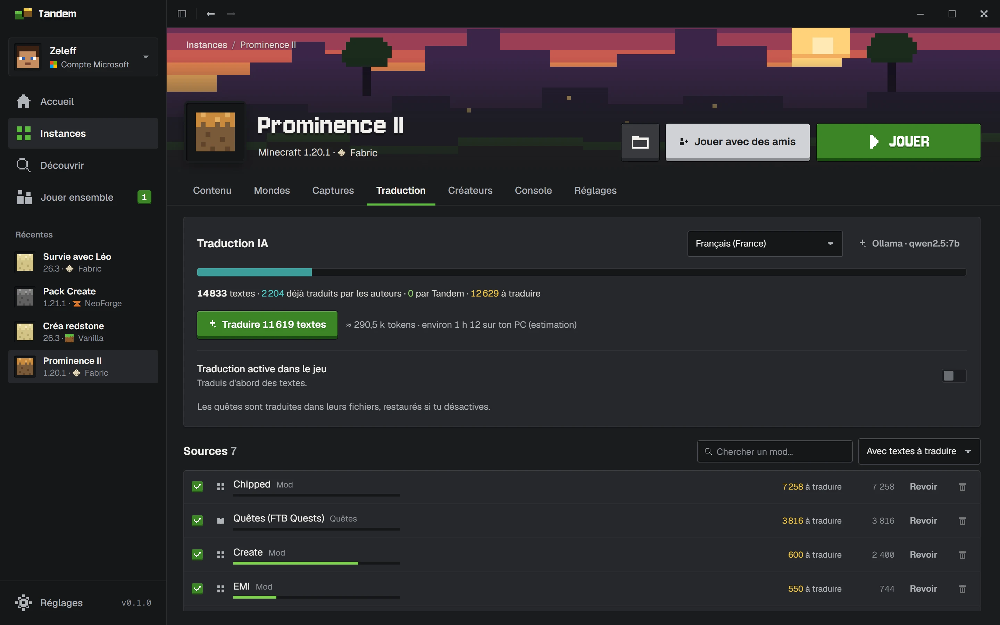

Un monde pour chaque envie.
Vanilla, Fabric, Quilt, Forge ou NeoForge. Garde tes aventures séparées et laisse Tandem installer le bon Java. Tes instances d’un autre launcher s’importent en un clic.

TandemTélécharger ↓Moins de réglages. Plus d’aventures.
Tes mods, tes mondes et tes amis,
au même endroit. Sans serveur à louer.
Un bon launcher devrait te faire oublier qu’il existe. Tandem s’occupe des préparatifs. Toi, choisis ta prochaine aventure.

Vanilla, Fabric, Quilt, Forge ou NeoForge. Garde tes aventures séparées et laisse Tandem installer le bon Java. Tes instances d’un autre launcher s’importent en un clic.
Mods, modpacks, shaders et packs de ressources : explore Modrinth et transforme ton jeu depuis le launcher. Les mises à jour se font en un clic.
Des sauvegardes automatiques après tes sessions, et tes captures réunies par instance. Pour ne rien perdre de l’aventure.
Tandem démarre en moins d’une seconde et reste fluide avec des centaines de mods. Si le jeu plante, il te dit quel mod est en cause.
Invite tes amis dans ta partie avec un simple code. Pas de serveur à louer, pas de port à ouvrir : Tandem relie vos PC.

Tandem traduit les mods, les quêtes et les livres d’un modpack avec l’IA. Les traductions des auteurs passent toujours en premier.
Avec un modèle local (Ollama, LM Studio), rien ne sort de ton ordinateur.
OpenAI, Anthropic ou tout service compatible : tu paies le service directement, Tandem ne prend rien au passage.
La traduction s’active et se retire par instance. Tes fichiers d’origine ne sont jamais perdus.

Oui. Tandem est gratuit et son code est disponible sur GitHub sous licence MIT. Minecraft: Java Edition doit être acheté séparément.
Tout ce qui est sur Modrinth : mods, modpacks, shaders et packs de ressources. Tandem prend en charge Vanilla, Fabric, Quilt, Forge et NeoForge, ainsi que les fichiers .mrpack.
Chacun a besoin de Tandem et d’un compte Microsoft qui possède Minecraft: Java Edition. L’hôte lance sa partie et partage un code ; ses amis le saisissent et Tandem leur prépare une copie de l’instance avec les mêmes mods.
La connexion se fait sur la page officielle de Microsoft, dans ton navigateur : Tandem ne voit jamais ton mot de passe. Les jetons restent dans le coffre de ton système, et Tandem n’a pas de serveur de comptes.
L’installeur n’est pas encore signé, alors Windows SmartScreen peut afficher « Windows a protégé votre ordinateur ». Clique sur « Informations complémentaires », puis « Exécuter quand même ». Sur macOS, fais un clic droit sur Tandem puis « Ouvrir » au premier lancement.
Tandem est encore jeune. Cette première version permet de découvrir le launcher et de contribuer à son évolution : les mises à jour arrivent toutes seules dans l’application.
Le prochain monde n’attend que toi.
Télécharger Tandem ↓Free code signing provided by SignPath.io, certificate by SignPath Foundation.
Committers and reviewers: Zeleff · Approvers: Zeleff
Ce que Tandem envoie sur Internet : politique de confidentialité.